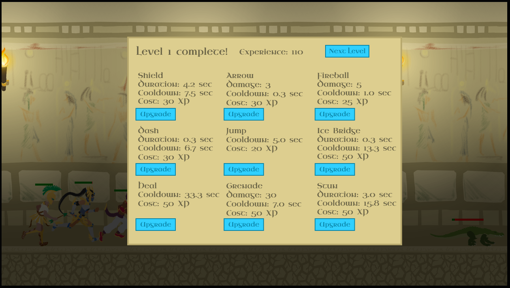
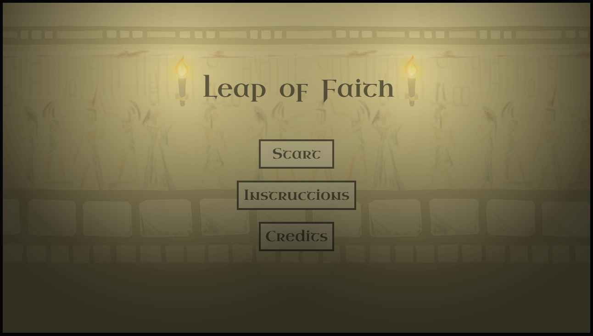
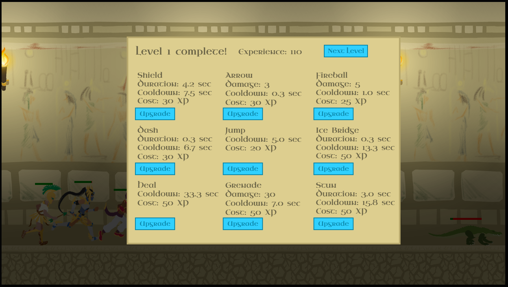
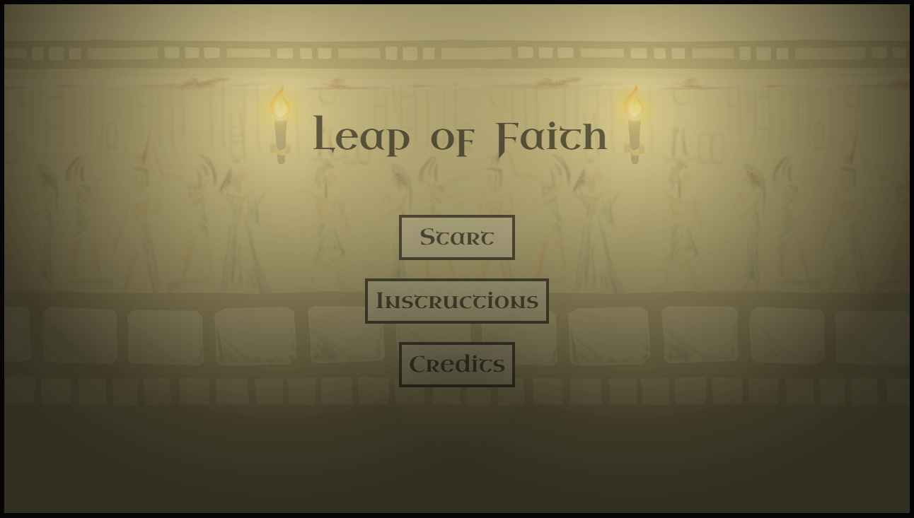
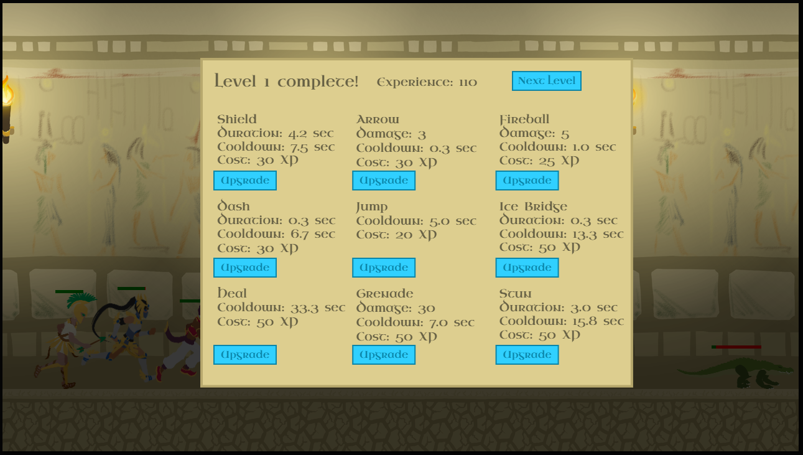
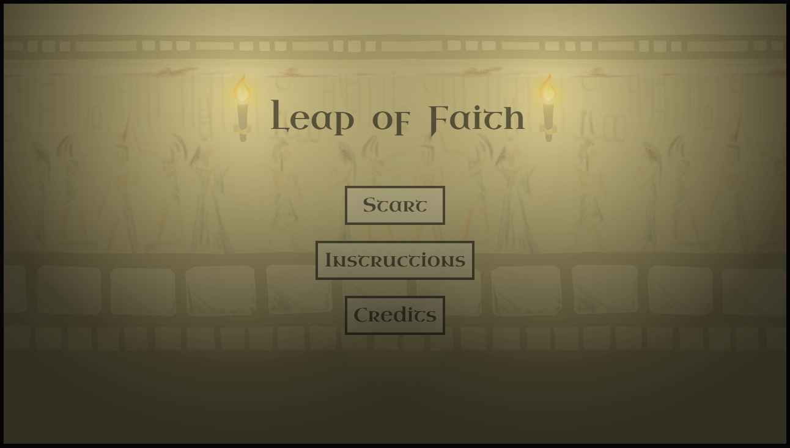
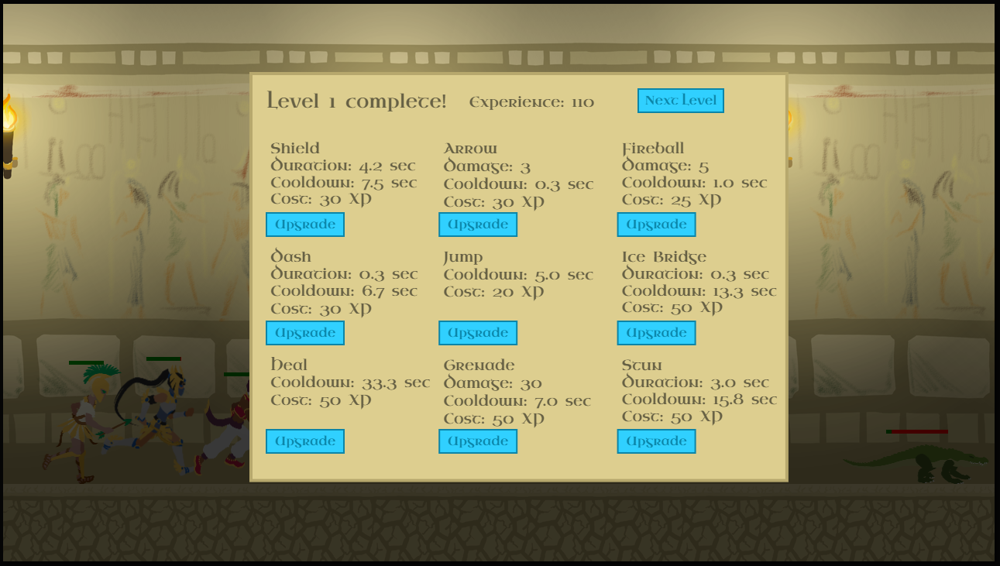
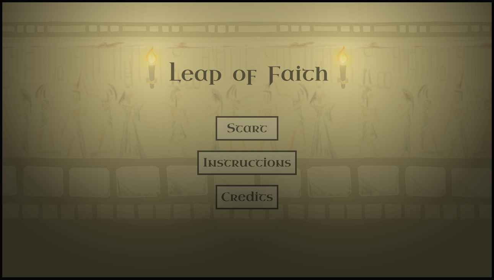

Leap of Faith is a 2D sidescroller runner that was created in five weeks. I acted as the lead gameplay programmer and engine developer.
Leap of Faith was created in Javascript using canvas and a custom game engine I wrote myself. My work on the engine included the code for game objects (movement, jumping, and platforming physics), input recognition and routing, lighting, and survivability elements such as entity health and ability cooldowns.
I deinitely have ideas of what I would do if I were to work further on this project: varied environments to make it less stale, difficulty settings (e.g. hard mode where abilities don't auto-aim), and multiple simultaneous enemies. I also see potential for more diversity in the enemies and levels, including levels where the direction changes over time, and end of level bosses.
The game is styled as taking place in an Egyptian temple. This is partially reflected in the characters, whose style is inspired by a mix of ancient Egypt and Greece. The player controls a party of three characters which they can freely switch between. Using the ability keys (Q-W-E) uses the three different abilities of whoever is currenctly select as the party leader. Players also control the jumping of the party leader, while the other party members jump automatically based on when the leader jumps. The three characters have differing ability sets. This makes the gameplay very active; you will constantly be switching party members back and forth, and activating various abilities quickly by analyzing the situation of the fly.